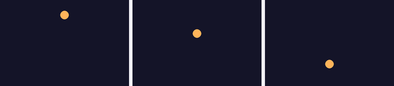

Основы игровой физики: скорость, гравитация и отскок
Гравитация — это накапливающаяся скорость, а не мгновенный прыжок координаты; отскок и трение добавляются той же логикой через delta time.
Мяч из раздела 20.5 меняет направление на противоположное при ударе о стену — это уже простейшая физика. Добавим к ней ещё две идеи, которые чаще всего нужны в аркадных играх: гравитацию и трение.
Единицы измерения
В формулах этого раздела три разные величины, и их легко перепутать местами. Позиция
(x, y) измеряется в пикселях.
Скорость — в пикселях в секунду (px/s): именно в этих единицах, как вы уже знаете из раздела
20.16, задают skorost_x/skorost_y
при движении через delta time. Ускорение — в пикселях в секунду за секунду, то есть
(px/s)/s, что обычно и пишут как px/s²: это то, насколько сама скорость меняется каждую
секунду. Гравитация ниже — как раз пример ускорения.
Гравитация как накопление скорости
Гравитация — это не «прибавить к Y большое число один раз», а постоянное, маленькое ускорение, которое на каждом кадре немного увеличивает вертикальную скорость. Сама позиция меняется уже за счёт этой скорости — с использованием delta time из раздела 20.16:
GRAVITACIYA = 900 # пикселей в секунду за секунду (ускорение)
skorost_y += GRAVITACIYA * dt # скорость растёт с каждым кадром
y += skorost_y * dt # позиция меняется за счёт накопленной скоростиИменно поэтому в реальной жизни (и в играх с честной гравитацией) падение начинается медленно и разгоняется — это прямое следствие постоянного накопления скорости, а не настройки «скорость падения» одним числом.

Отскок с потерей энергии
Реальный мяч не отскакивает вечно с одной и той же высоты — часть энергии теряется при ударе. В коде это одна дополнительная строка после разворота скорости:
KOEFF_OTSKOKA = 0.8 # мяч сохраняет 80% скорости после отскока
if y + radius > VYSOTA:
y = VYSOTA - radius
skorost_y = -skorost_y * KOEFF_OTSKOKAБез множителя затухания KOEFF_OTSKOKA мяч отскакивал бы
на одну и ту же высоту бесконечно — с ним же высота отскоков естественно уменьшается с
каждым ударом, пока мяч почти не остановится. Такой множитель затухания скорости от удара к
удару — устоявшийся в играх приём и называется restitution (коэффициент
восстановления, буквально «коэффициент отскока»): значение 1.0
соответствует идеализированному отскоку без потерь на исходной скорости, а любое значение
между 0 и 1 — затухающему отскоку с постепенной потерей энергии.
Трение
Трение работает похожим образом для горизонтального движения — скорость постепенно уменьшается по модулю (но не меняет знак), пока не станет равна нулю. Важно, чтобы трение, как и гравитация, было задано ускорением в px/s² и применялось через delta time — иначе, если умножать скорость на постоянный коэффициент каждый кадр, торможение будет зависеть от FPS точно так же, как и нескорректированное движение из раздела 20.16: на 120 FPS такое умножение сработает вдвое чаще, чем на 60 FPS, и объект остановится заметно быстрее:
TRENIE = 300 # пикселей в секунду за секунду — ускорение торможения
if skorost_x > 0:
skorost_x = max(0.0, skorost_x - TRENIE * dt)
elif skorost_x < 0:
skorost_x = min(0.0, skorost_x + TRENIE * dt)max()/min() здесь не дают
торможению «проскочить» через ноль и разогнать объект в обратную сторону — скорость
останавливается ровно на нуле, а не продолжает уменьшаться дальше.